GUI
Table of Contents
 #+HTML_HEAD_EXTRA:
#+HTML_HEAD_EXTRA:
1. Streamlit
1.1. 安裝套件
1.1.1. 1. 使用前先安裝套件
1: pip3 install streamlit
1.1.2. 2. 利用pycharm或其他編輯器新增一個python程式碼，檔名先叫main.py，輸入下列程式、存檔
1: import streamlit as st 2: 3: st.title('測試python的web玩具')
1.1.3. 3. 執行
在pycharm、visual code裡的終端機輸入以下指令
1: streamlit run main.py
1.1.4. 結果
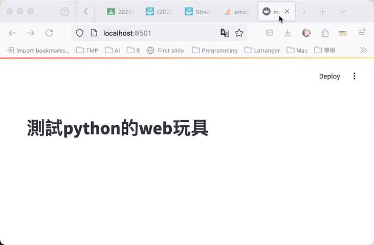
Figure 1: Streamlit 執行畫面
1.2. 秀資料
學生成績
1: import streamlit as st 2: import pandas as pd 3: 4: st.title('學生成績') 5: 6: df = pd.DataFrame({ 7: '國文': [98, 76, 100, 38, 40], 8: '數學': [80, 46, 80, 67, 66] 9: }) 10: df 11: 12: # 畫圖 13: st.line_chart(df)
1.3. Sidebar
1.3.1. 測試一下
1: import streamlit as st 2: import pandas as pd 3: 4: st.title('學生成績') 5: st.write('lalala') 6: # 數據 7: df = pd.DataFrame({ 8: '國文': [98, 76, 100, 38, 40], 9: '數學': [80, 46, 80, 67, 66] 10: }) 11: 12: st.sidebar.write('選項1') 13: st.sidebar.markdown('選項2') 14: with st.sidebar: 15: st.write('選項3') 16: 17: df 18:
1.3.2. 練習
- 請自行在sidebar和main area裡加入一些文字
- 可以發現sidebar是可以接受markdown語法的，那麼，你能否應用markdown語法在sidebar裡放一個google的連結呢?
你能否利用markdown將底下這張圖放在sidebar中?
:ORDERED: t
1: import streamlit as st 2: import pandas as pd 3: 4: st.title('學生成績') 5: 6: # 數據 7: df = pd.DataFrame({ 8: '國文': [98, 76, 100, 38, 40], 9: '數學': [80, 46, 80, 67, 66] 10: }) 11: 12: # 側邊欄連結 13: st.sidebar.markdown("[查看數據](?page=table)") 14: st.sidebar.markdown("[畫圖](?page=chart)") 15: 16: # 獲取當前URL參數 17: query_params = st.query_params 18: page = query_params.get("page", "table") 19: 20: # 根據URL參數顯示相應的內容 21: if page == 'table': 22: st.write('學生成績數據表') 23: st.dataframe(df) 24: elif page == 'chart': 25: st.write('學生成績折線圖') 26: st.line_chart(df)
1.3.3. 課堂練習
1.4. 下拉式選單
1: import streamlit as st 2: import pandas as pd 3: 4: st.title('學生成績') 5: 6: # 數據 7: df = pd.DataFrame({ 8: '國文': [98, 76, 100, 38, 40], 9: '數學': [80, 46, 80, 67, 66] 10: }) 11: 12: # 側邊欄選擇 13: st.sidebar.write('選單') 14: option = st.sidebar.selectbox( 15: '請選擇操作', 16: ['查看數據', '畫圖'] 17: ) 18: 19: # 根據選擇顯示相應的內容 20: if option == '查看數據': 21: st.write('學生成績數據表') 22: st.dataframe(df) 23: elif option == '畫圖': 24: st.write('學生成績折線圖') 25: st.line_chart(df)
1.5. 地圖
1: import streamlit as st 2: import pandas as pd 3: 4: st.title('雲林智慧教育中心') 5: # 定義不同地點的數據 6: locations = { 7: '雲林智慧教育中心': {'lat': 23.67, 'lon': 120.39}, 8: '雲林高鐡站': {'lat': 23.738, 'lon': 120.428} 9: } 10: 11: # 在側邊欄中選擇地點 12: st.sidebar.write('選單') 13: option = st.sidebar.selectbox( 14: '請選擇地點', 15: ['雲林智慧教育中心', '雲林高鐡站']) 16: 17: # 根據選擇的地點更新地圖數據 18: selected_location = locations[option] 19: data = pd.DataFrame({ 20: 'lat': [selected_location['lat']], 21: 'lon': [selected_location['lon']], 22: 'name': [option] 23: }) 24: 25: st.map(data)
1.6. 選單
1: import streamlit as st 2: 3: st.write('標暊') 4: food = st.selectbox( 5: '請選擇', 6: ['葷食', '素食']) 7: 8: if food=='葷食': 9: st.write('今天吃麥當勞') 10: else: 11: st.write('今天吃啃的雞') 12: 13: st.sidebar.write('主選單') 14: option = st.sidebar.selectbox( 15: '請選擇地點', 16: ['雲林智慧教育中心', '雲林高鐡站']) 17:
1.7. 聊天
1: import streamlit as st 2: 3: with st.chat_message("user"): # 或者寫 "human" 4: st.write("Hi 👋，請問你是誰？") 5: 6: # 另一種寫法 7: message = st.chat_message("assistant") # 或者寫 "ai" 8: # message = st.chat_message("assistant", avatar="🦖") # 自訂頭像 9: message.write("你好！我是 ChatBot 🤖，可以回答各種問題，提供資訊。") 10: message.write("有什麼我可以幫助你的嗎？") 11: 12: st.chat_input("Say something...") 13:
1.8. 照相
1: import streamlit as st 2: 3: img_file_buffer = st.camera_input("Take a picture") 4: 5: if img_file_buffer is not None: 6: # To read image file buffer as bytes: 7: bytes_data = img_file_buffer.getvalue() 8: # Check the type of bytes_data: 9: # Should output: <class 'bytes'> 10: #st.write(type(bytes_data)) 11: 12: with open("/Users/letranger/Desktop/captured_image.png", "wb") as f: 13: f.write(bytes_data) 14: 15: st.success("Image saved successfully!")
1.9. cache
1: import streamlit as st 2: import pandas as pd 3: import numpy as np 4: 5: st.title('Uber pickups in NYC') 6: 7: DATE_COLUMN = 'date/time' 8: DATA_URL = ('https://s3-us-west-2.amazonaws.com/' 9: 'streamlit-demo-data/uber-raw-data-sep14.csv.gz') 10: 11: @st.cache_data 12: def load_data(nrows): 13: data = pd.read_csv(DATA_URL, nrows=nrows) 14: lowercase = lambda x: str(x).lower() 15: data.rename(lowercase, axis='columns', inplace=True) 16: data[DATE_COLUMN] = pd.to_datetime(data[DATE_COLUMN]) 17: return data 18: 19: data_load_state = st.text('loading data ...') 20: data = load_data(10000) 21: data_load_state.text('done (cached data).') 22: 23: if st.checkbox('show raw data'): 24: st.subheader('Raw data') 25: st.write(data) 26: 27: st.subheader('Number of pickups by hour') 28: hist_values = np.histogram( 29: data[DATE_COLUMN].dt.hour, bins=24, range=(0,24))[0] 30: st.bar_chart(hist_values) 31: 32: hour_to_filter = st.slider('hour', 0, 23, 6) # min: 0h, max: 23h, default: 17h 33: st.subheader(f'Map of all pickups at {hour_to_filter}:00') 34: filtered_data = data[data[DATE_COLUMN].dt.hour == hour_to_filter] 35: st.write(f'read nrows: {len(filtered_data)}') 36: st.map(filtered_data) 37:
1.10. 研習用範例
1.10.1. 需要先在本機端安裝的套件
1: pip3 install pandas 2: pip3 install streamlit 3: pip3 install plotly 4: pip3 install scikit-learn
1.10.2. 範例程式
1: import pandas as pd 2: import streamlit as st 3: import plotly.express as px 4: from sklearn.cluster import KMeans 5: 6: # 讀取資料 7: test = pd.read_csv("https://letranger.github.io/working/scores.csv") 8: 9: # Streamlit 應用程式標題 10: st.title("分數分佈") 11: 12: # 設定側邊欄選單 13: st.sidebar.write('選單') 14: 15: # 科目選擇下拉選單 16: option = st.sidebar.selectbox( 17: '請選擇科目', 18: ['國文', '英文', '數學', '物理'] 19: ) 20: 21: # 顯示資料框 22: st.write("### 資料", test) 23: 24: # 將分數依每10分分一組 25: test['binned'] = pd.cut(test[option], bins=range(0, 101, 10)) 26: 27: # 計算每個區間的頻率 28: frequency = test['binned'].value_counts().sort_index() 29: # 轉換為資料框格式，方便 Streamlit 顯示 30: frequency_df = pd.DataFrame({'分數區間': frequency.index.astype(str), '頻率': frequency.values}) 31: 32: # 使用 Streamlit 顯示長條圖 33: st.bar_chart(frequency_df.set_index('分數區間')) 34: 35: # KMeans 聚類 36: # 使用滑桿選擇 k 值（聚類數量） 37: k = st.slider("選擇聚類的數量 k", 2, 10, 3) 38: kmeans = KMeans(n_clusters=k) # 預設分為 k 群 39: kmeans.fit(test[['國文', '英文']]) # 使用 '國文' 和 '英文' 進行聚類 40: clusters = kmeans.predict(test[['國文', '英文']]) 41: 42: # 將聚類結果添加到資料框 43: test['聚類'] = clusters 44: 45: # 使用 Plotly 繪製聚類結果的散點圖 46: fig2 = px.scatter(test, x='國文', y='英文', color='聚類', title='國文與英文分數的聚類結果') 47: st.plotly_chart(fig2)
1.11. 執行結果
你也可以把你開發好的程式透過Github發佈到Streamlit的免費雲端平台https://streamlit.io/，像這樣
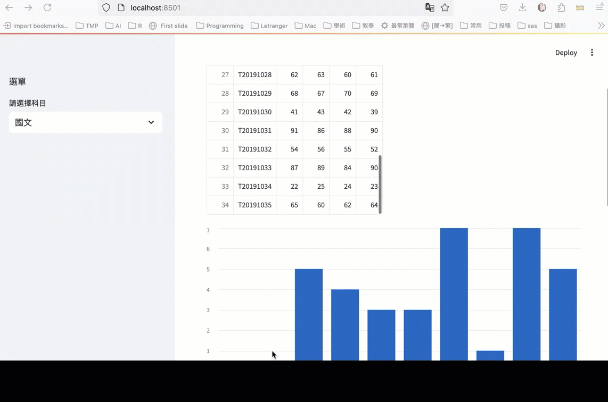
Figure 2: Streamlit執行範例
2. Gradio
讓只有command line I/O的python程式搖身一變成為web service。
2.1. 安裝套件
1: pip3 install gradio
2.2. Hello world1
- fn ：被 UI 裝飾的函式
- inputs ：輸入元件。如 “text” 、 “image” 、 “audio” 等
- outputs ：輸出元件。如 “text” 、 “image” 、 “label” 等
Gradio 支援 20 多種不同的元件型別，其中大部分都可以作為輸入/輸出元件，詳見官網文件gradio Docs
1: import gradio as gr 2: 3: def greet(name): 4: return "Hello " + name + "!!" 5: 6: demo = gr.Interface(fn=greet, inputs="text", outputs="text") 7: 8: demo.launch()
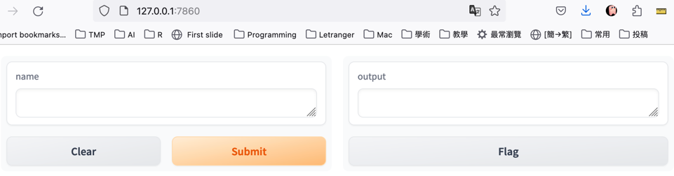
Figure 3: 執行畫面
2.3. 數字 I/O
1: import gradio as gr 2: 3: def BMI(h, w): 4: h /= 100 5: return f'BMI值: {w/(h*h)}' 6: 7: ui = gr.Interface( 8: fn=BMI, inputs=[gr.Slider(100, 240, label="身高(cm)"), gr.Slider(40, 200, label="體重(kg)")], 9: outputs=["text"] 10: ) 11: ui.launch(share=True)
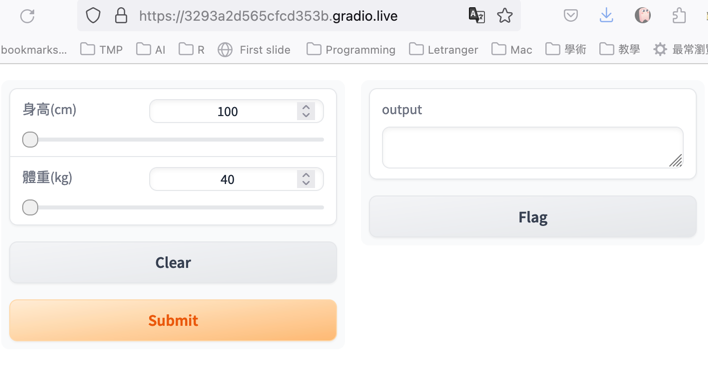
Figure 4: 執行畫面
2.3.1. [課堂練習]三角形面積 TNFSH
輸入三角形三邊長(1..100)，輸出面積、周長
2.4. 文字 I/O
1: import gradio as gr 2: 3: def greet(name): 4: return "Hello " + name + "!" 5: 6: demo = gr.Interface( 7: fn=greet, 8: inputs=gr.Textbox(lines=2, placeholder="Name Here..."), 9: outputs="text", 10: ) 11: demo.launch(share=True)
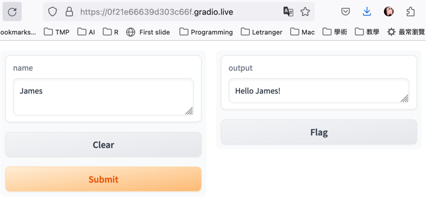
Figure 5: 執行畫面
2.5. 多資料 I/O
1: import gradio as gr 2: 3: def greet(name, is_morning, temperature): 4: salutation = "Good morning" if is_morning else "Good evening" 5: greeting = f"{salutation} {name}. It is {temperature} degrees today" 6: celsius = (temperature - 32) * 5 / 9 7: return greeting, round(celsius, 2) 8: 9: demo = gr.Interface( 10: fn=greet, 11: inputs=["text", "checkbox", gr.Slider(0, 100)], 12: outputs=["text", "number"], 13: ) 14: demo.launch(share=True)
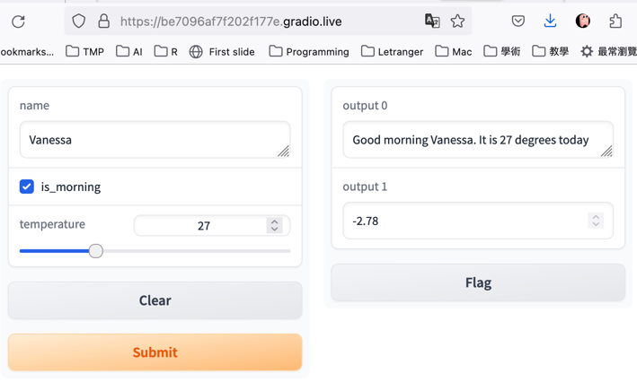
Figure 6: 執行畫面
2.6. 圖形 I/O
1: import gradio as gr 2: import matplotlib.pyplot as plt 3: import numpy as np 4: def curve(a, b, c): 5: x = np.arange(-3, 3, 0.3) 6: y = a*x**2 + b*x + c 7: fig = plt.figure() 8: plt.plot(x, y) 9: print(x) 10: print(y) 11: return fig 12: inputs = [gr.Slider(0, 10, 5), gr.Slider(0, 10, 5), gr.Slider(0, 10, 5)] 13: outputs = gr.Plot() 14: demo = gr.Interface( 15: fn=curve, 16: inputs=inputs, 17: outputs=outputs, 18: cache_examples=True,) 19: demo.launch(share=True)
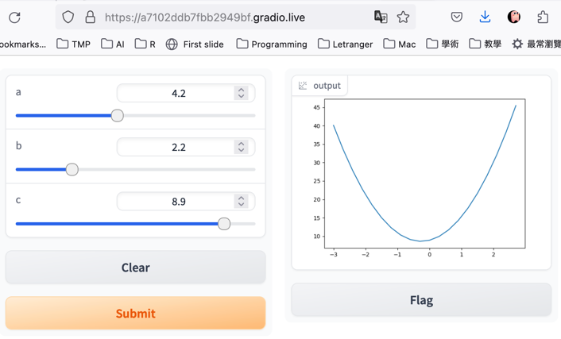
Figure 7: 執行畫面
2.7. Button
1: import gradio as gr 2: 3: def greet(name): 4: return "Hello " + name + "!" 5: 6: with gr.Blocks() as demo: 7: name = gr.Textbox(label="Name") 8: output = gr.Textbox(label="Output Box") 9: greet_btn = gr.Button("Greet") 10: greet_btn.click(fn=greet, inputs=name, outputs=output) 11: 12: demo.launch(share=True)
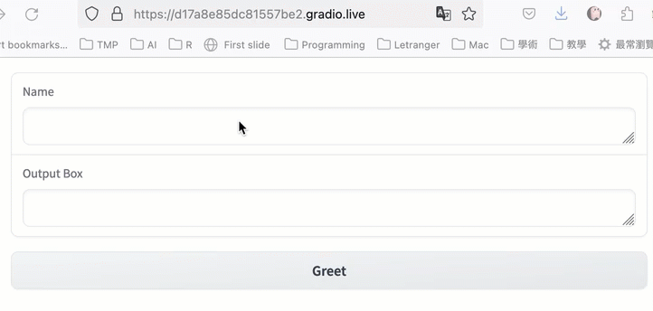
Figure 8: 執行畫面
2.8. Radio
1: import gradio as gr 2: 3: def greet(gender, name): 4: if gender == "Male": 5: return "Hello, Mr. " + name + "!" 6: else: 7: return "Hello, Ms. " + name + "!" 8: 9: with gr.Blocks() as demo: 10: input = [gr.Radio(["Male", "Female"]), gr.Textbox(label="Name")] 11: output = gr.Textbox(label="Output Box") 12: greet_btn = gr.Button("Greet") 13: greet_btn.click(fn=greet, inputs=input, outputs=output) 14: 15: demo.launch(share=True)
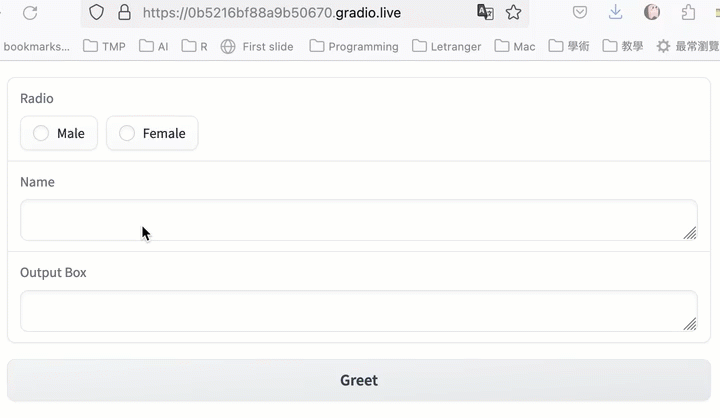
Figure 9: 執行畫面
2.9. Tab(分頁)
適合多功能的程式(靜態的多重輸入)
1: import gradio as gr 2: 3: def tri(a, b, c): 4: import math 5: # 使用海龍公式計算半周長 6: s = (a + b + c) / 2 7: # 使用半周長計算面積 8: area = math.sqrt(s * (s - a) * (s - b) * (s - c)) 9: return round(area,2) 10: 11: def rect(a, b): 12: return round(a*b,2) 13: 14: area1 = gr.Interface( 15: tri, 16: [gr.Slider(label="長"), gr.Slider(label="寬"), gr.Slider(label="高") ], 17: gr.Number(label="面積"), 18: ) 19: 20: area2 = gr.Interface( 21: rect, 22: [ gr.Slider(label="長"), gr.Slider(label="寬") ], 23: gr.Number(label="面積"), 24: ) 25: 26: gr.TabbedInterface( 27: [area1, area2], ["三角形", "長方形"] 28: ).launch()
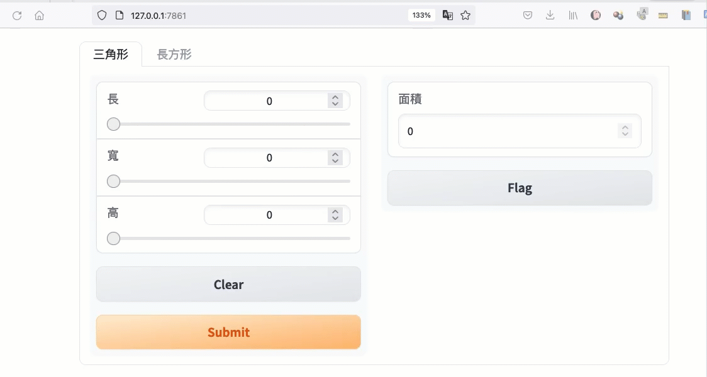
Figure 10: 分頁式的Gradio
3. Flask
3.1. Button
1: from flask import Flask 2: app = Flask(__name__) 3: 4: @app.route("/") 5: def hello(): 6: title = "<title>Advanced Materials of Python</title>" 7: h1 = "<h1>Python based web</h1>" 8: p1 = "<p>這是用Python開發的網站</p>" 9: return title+h1+p1 10: 11: if __name__ == "__main__": 12: app.run()
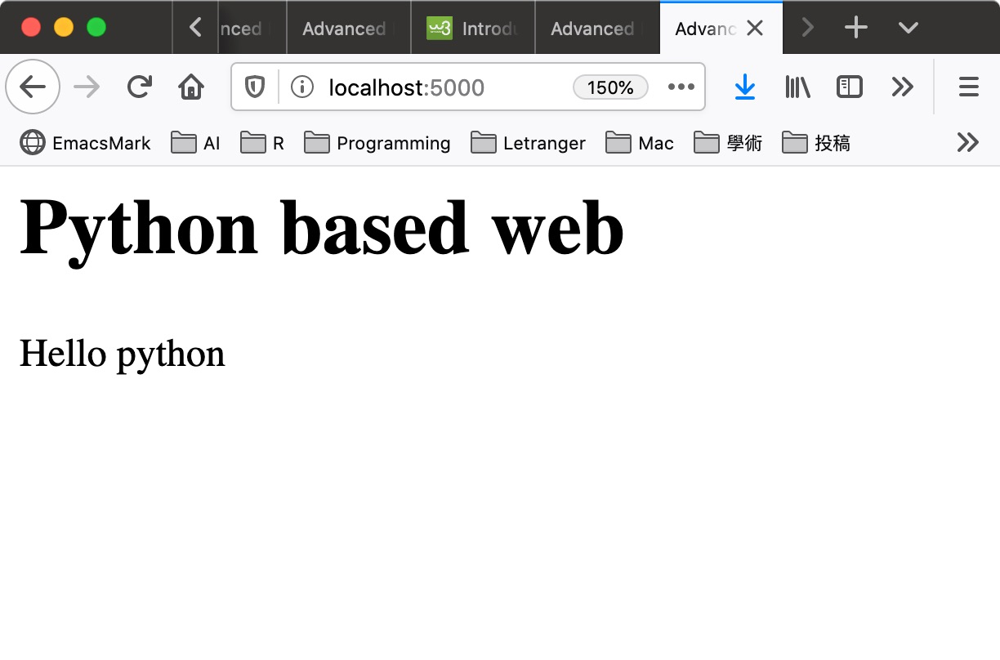
Figure 11: Flask Web Site
3.2. Input form2
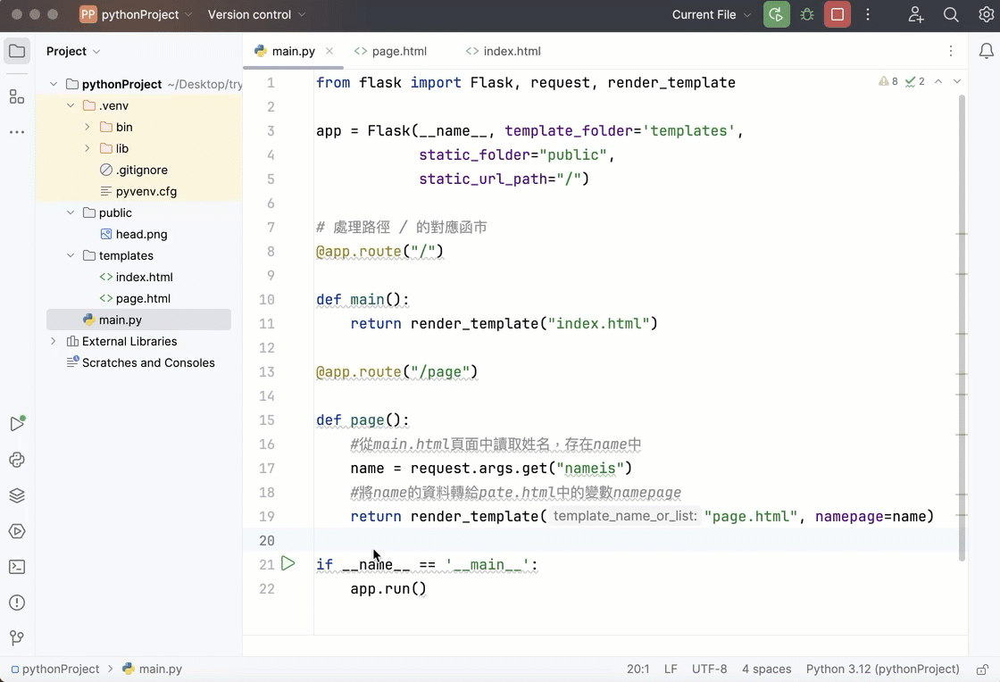
Figure 12: 執行畫面
3.2.1. Python
1: # Flask網站前後端互動 09 - 超連結與圖片 2: # 載入Flask、Request、render_template 3: from flask import Flask, request, render_template 4: 5: app = Flask(__name__, template_folder='templates', 6: static_folder="public", 7: static_url_path="/") 8: 9: # 處理路徑 / 的對應函市 10: @app.route("/") 11: 12: def main(): 13: return render_template("index.html") 14: 15: @app.route("/page") 16: 17: def page(): 18: #從main.html頁面中讀取姓名，存在name中 19: name = request.args.get("nameis") 20: #將name的資料轉給pate.html中的變數namepage 21: return render_template("page.html", namepage=name) 22: # 啟動Server 23: 24: if __name__ == '__main__': 25: app.debug = True 26: app.run()
3.2.2. templates
- 建立public資料夾，放入一個head.png圖檔
- 建立templates資料夾
- 以下兩個html檔要放在templates資料夾中
3.2.2.1. index.html
1: <!DOCTYPE html> 2: <html lang="en"> 3: 4: <head> 5: <meta charset="UTF-8"> 6: <meta http-equiv="X-UA-Compatible" content="IE=edge"> 7: <meta name="viewport" content="width=device-width, initial-scale=1.0"> 8: <title>這是標題</title> 9: </head> 10: 11: <body> 12: <h3>網頁的主畫面</h3> 13: <form action="/page"> 14: 名字:<input type="text" name="nameis"> 15: <button>點擊送出</button> 16: </form> 17: </body> 18: 19: </html>
3.2.2.2. page.html
<!DOCTYPE html> <html lang="en"> <head> <meta charset="UTF-8"> <meta http-equiv="X-UA-Compatible" content="IE=edge"> <meta name="viewport" content="width=device-width, initial-scale=1.0"> <title>page1</title> </head> <body> <h1>我的名字叫 {{namepage}}</h1> </body> </html>
4. tkinter
4.1. 安裝
4.1.1. MacOS
於PyCharm的terminal下輸入brew install python-tk@Python版本
如果系統的預設python版本為3.9，則輸入
1: brew install python-tk@3.9 2: pip install tk
4.2. DEMO #1
1: # -*- coding: utf-8 -*- 2: import tkinter as tk 3: from tkinter import messagebox 4: # 按完button要做什麼 5: def test(): 6: tk.messagebox.showinfo('測試', 'Hi') 7: 8: # main window 9: root = tk.Tk() 10: root.title('my window') 11: root.geometry('200x150') 12: 13: root.configure(background='white') 14: 15: myentry = tk.Entry(root) 16: myentry.pack() 17: 18: # Button 19: myButton = tk.Button(root, text='Button', command=test) 20: myButton.pack() 21: 22: # Label 23: resultLabel = tk.Label(root, text='這是Label') 24: resultLabel.pack() 25: 26: root.mainloop()
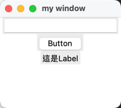
Figure 13: 執行畫面
4.3. DEMO #2
1: # -*- coding: utf-8 -*- 2: import tkinter as tk 3: from tkinter import messagebox 4: 5: def button_event(): 6: #print(var.get()) 7: if var.get() == '': 8: tk.messagebox.showerror('message', '未輸入答案') 9: elif var.get() == '2': 10: tk.messagebox.showinfo('message', '答對了！') 11: else: 12: tk.messagebox.showerror('message', '答錯') 13: 14: root = tk.Tk() 15: root.title('my window') 16: 17: # label 18: mylabel = tk.Label(root, text='1+1=') 19: mylabel.grid(row=0, column=0) 20: 21: var = tk.StringVar() 22: myentry = tk.Entry(root, textvariable=var) 23: myentry.grid(row=0, column=1) 24: 25: mybutton = tk.Button(root, text='完成', command=button_event) 26: mybutton.grid(row=1, column=1) 27: 28: root.mainloop()
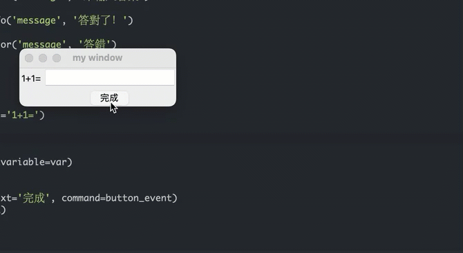
Figure 14: 執行畫面
5. PyInstaller
5.1. 安裝pyinstaller
1: pip3 install pyinstaller
5.2. 準備要打包的檔案
5.2.1. 找一個喜歡的icon
- https://www.iconarchive.com
- mac: icns
- windows: ico
此處我下載了一個icns，命名為imac.icns，與底下的403qq.py存於同一資料夾裡，如果你懶到不想自己找，也可以按這裡下載我的icns圖示檔
5.2.2. 以前述tkinter demo#2為例，將下列程式命名為403qq.py
1: import tkinter as tk 2: from tkinter import messagebox 3: 4: def button_event(): 5: #print(var.get()) 6: if var.get() == '': 7: tk.messagebox.showerror('message', '未輸入答案') 8: elif var.get() == '2': 9: tk.messagebox.showinfo('message', '答對了！') 10: else: 11: tk.messagebox.showerror('message', '答錯') 12: 13: root = tk.Tk() 14: root.title('my window') 15: 16: # label 17: mylabel = tk.Label(root, text='1+1=') 18: mylabel.grid(row=0, column=0) 19: 20: var = tk.StringVar() 21: myentry = tk.Entry(root, textvariable=var) 22: myentry.grid(row=0, column=1) 23: 24: mybutton = tk.Button(root, text='完成', command=button_event) 25: mybutton.grid(row=1, column=1) 26: 27: root.mainloop()
5.3. 打包
1: pyinstaller --icon imac.icns --noconsole -n 403QQ 403qq.py
成功執行後，會在同一資料夾中看到一個dist的資料夾，裡面有一支403QQ的應用程式，試著執行看看
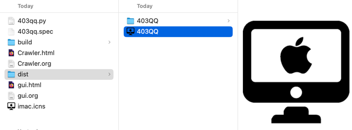
Figure 15: 編譯後的應用程式: 403QQ
7. TODO Kivy
8. PyQt
1: pip3 install PyQt6
1: import sys 2: from PyQt6.QtWidgets import QApplication, QWidget 3: from PyQt6.QtGui import QIcon 4: 5: class Window(QWidget): 6: def __init__(self): 7: super().__init__() 8: self.setWindowTitle("PyQT") 9: self.setFixedHeight(200) 10: self.setFixedWidth(200) 11: self.setGeometry(500, 300, 400, 300) 12: stylesheet = self.setStyleSheet('background-color:Gray') 13: 14: app = QApplication([]) 15: window = Window() 16: 17: window.show() 18: sys.exit(app.exec())